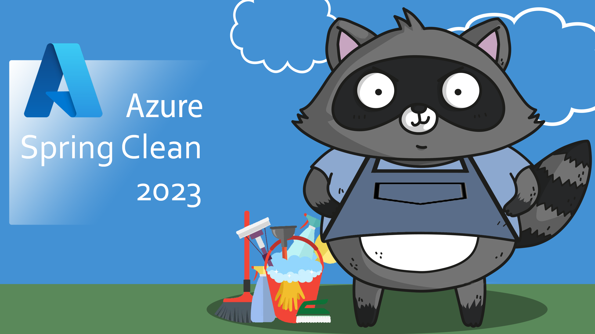
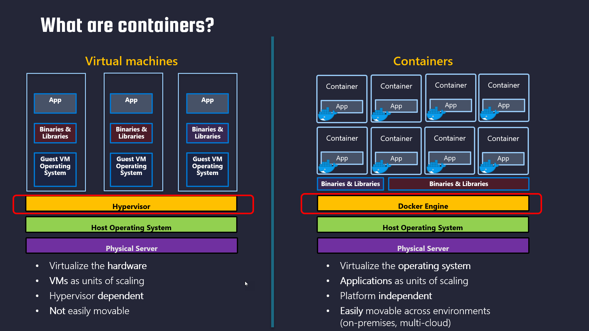
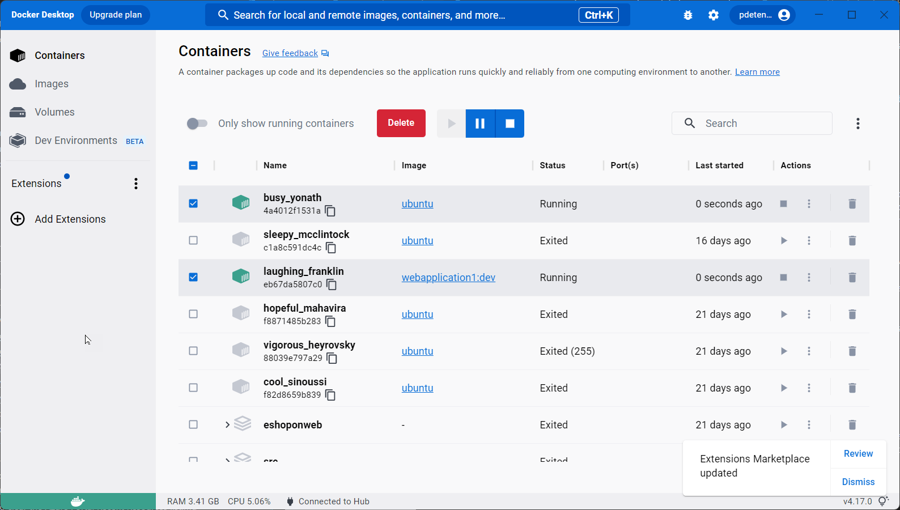
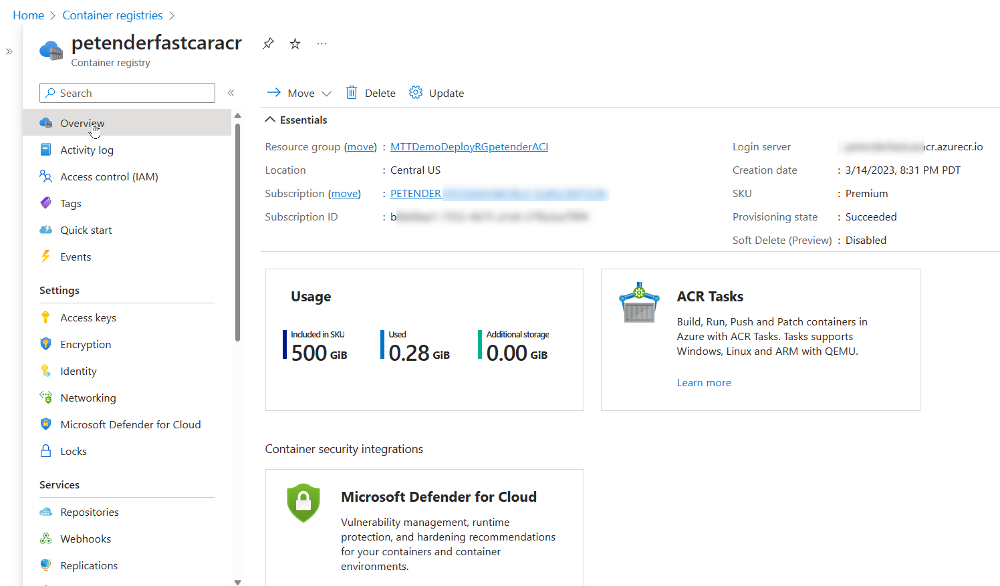
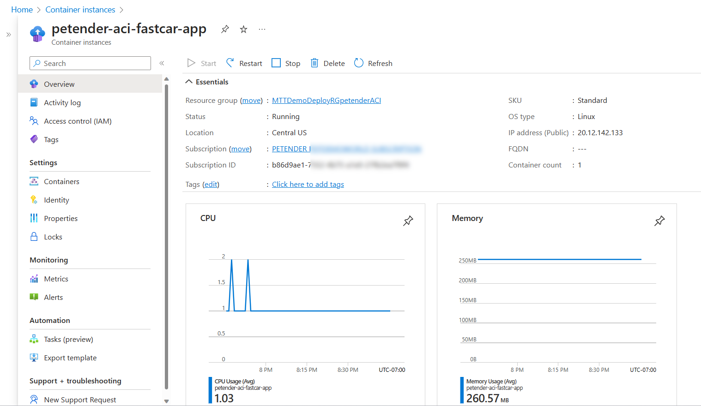
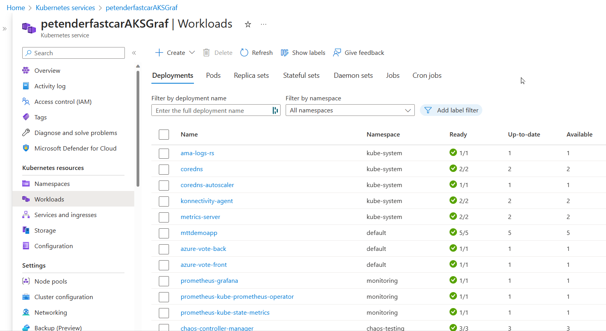
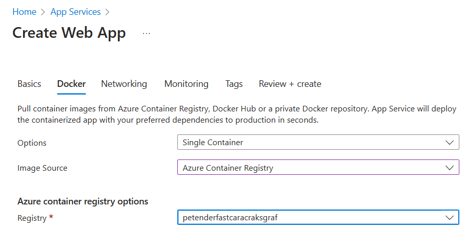
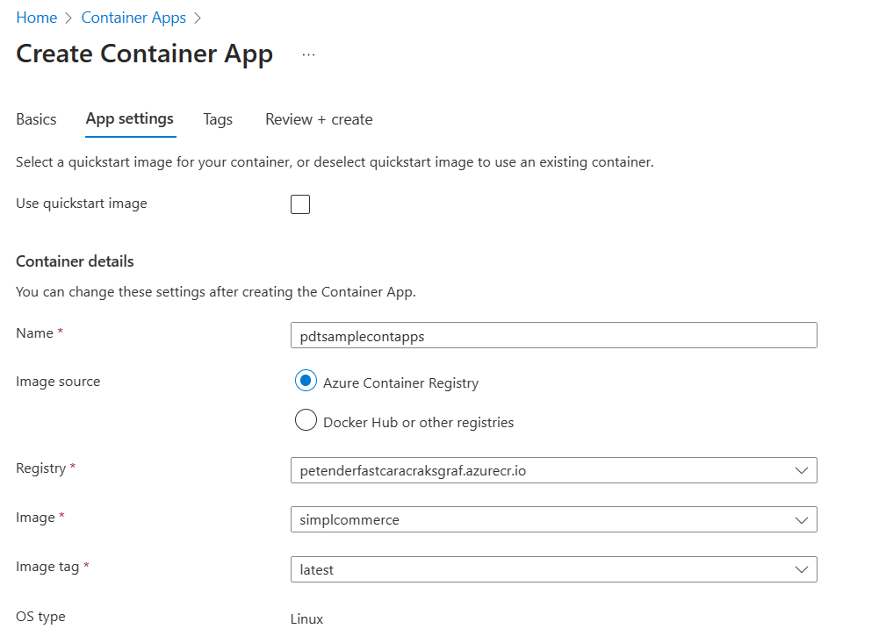
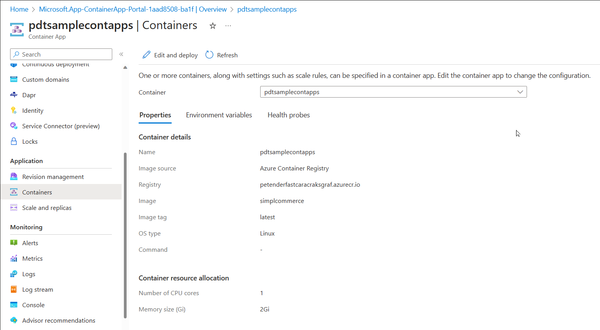

Hey friends,
Welcome to #AzureSpringClean, an initiative from Joe Carlyle and Thomas Thornton where I’m honored to be able to participate in again for the 4th year already. Thanks guys for trusting me once more for sharing some Azure knowledge…
This time, I wanted to try and guide you through the buzzword of the last couple of years, containers… and more specifically, what different options you have in Azure to run your containerized workloads.
Containerization has become a popular way to deploy applications in the cloud, offering benefits such as scalability, portability, and reliability. Azure, Microsoft’s cloud platform, offers several services that allow running containerized workloads, each with its own strengths and limitations. In this article, we will explore the different Azure services for container orchestration and management, including Azure Container Instance, Azure Kubernetes Services, Azure App Services, and Azure Container Apps.
The starting point of a containerized workload, is having, or building a Docker container image.
Docker & Docker Desktop
Docker is a popular platform for building, shipping, and running containerized applications. It provides a consistent environment for developers and operators to develop and deploy applications across different platforms and infrastructures. Docker makes it easy to package applications and their dependencies into portable container images, which can be run on any machine that supports Docker.
Docker containers are lightweight, standalone, and executable packages of software that include everything needed to run an application. They contain the application code, runtime, system tools, libraries, and settings, making them highly portable and efficient. Docker containers run in isolation from the host operating system, providing consistent behavior and preventing conflicts with other applications.

Docker Desktop is a desktop application for Windows and macOS that provides a complete development environment for building and testing Docker applications. It includes the Docker Engine, Docker CLI, and a GUI-based interface for managing containers, images, and networks. With Docker Desktop, developers can easily build, test, and run Docker applications on their local machines, without having to set up a separate environment.
Docker Desktop provides a simple and intuitive user interface for managing Docker images and containers. It allows developers to create, edit, and run Docker containers with just a few clicks. Developers can also use Docker Desktop to deploy applications to remote Docker hosts, such as cloud-based container orchestration platforms like Kubernetes.
One of the major benefits of Docker Desktop is its ability to provide a consistent development environment across different platforms and operating systems. It eliminates the need for developers to set up and maintain complex development environments on their own machines, which can be time-consuming and error-prone. Docker Desktop also supports popular programming languages and frameworks, such as Java, Node.js, Python, and Ruby, making it a versatile tool for building modern applications.

Overall, Docker and Docker Desktop provide a powerful platform for building, shipping, and running containerized applications. They simplify the development and deployment of applications, provide a consistent environment across different platforms, and offer a flexible and scalable way to build modern applications. With the continued growth of containerization, Docker and Docker Desktop are essential tools for any developer or operator looking to stay ahead in the rapidly evolving world of software development.
For more information on Docker and Docker Desktop, head over to the Docker Downloads.
If you want a sample container to test your Docker / Docker Desktop, feel free to use my sample e-commerce workload container, which runs a sample .NET6 web app
Now you have your Docker environment ready to use, let’s take the next step, moving the container image into Azure.
Azure Container Registry (ACR) (https://learn.microsoft.com/en-us/azure/container-registry/)
ACR is a managed private registry for storing and managing container images in the cloud. With ACR, you can store and manage Docker images for all of your containerized applications, making it easy to deploy and manage them in the cloud.
The purpose of ACR is to provide a secure and reliable way to store, manage, and deploy container images. By using ACR, you can ensure that your container images are stored securely in the cloud, and that only authorized users have access to them. ACR also provides built-in integration with all other Azure Container Services (see below), making it easy to deploy your container images across the different services.

ACR supports Docker Hub as well as DevOps environments as sources for container images, and it provides a seamless experience for pushing and pulling images from the registry. ACR also supports advanced features, such as geo-replication and image security vulnerability scanning, which allows you to replicate your images to multiple regions for high availability and scan your images for security vulnerabilities (Backed by Defender for Containers and Defender for Cloud).
In summary, ACR serves as a central repository for storing and managing your container images, making it easy to deploy and manage your containerized applications in the cloud. It provides a secure and reliable way to store your images, with built-in integration with other Azure container services for easy deployment.
Some sample Azure CLI code to get you started:
|
|
Once you run this command, Azure will create a new ACR with the specified name and SKU in the specified resource group. You can then use the ACR to store and manage your container images.
With the ACR being ready, it’s time to upload (push) the Docker image into the registry. Here are a few steps to get you started:
|
|
Before you can push a Docker image to the Azure Container Registry, it needs to be updated with the name of the registry. You can use Docker tag command to help with this:
|
|
followed by:
|
|
wait for the upload to complete.
Azure Container Instance (ACI) (https://learn.microsoft.com/en-us/azure/container-instances/)
Azure Container Instance (ACI) is a serverless solution for running containers in the cloud. With ACI, you can deploy and manage containers without worrying about the underlying infrastructure. ACI is an excellent choice for running short-lived containerized tasks that don’t require orchestration, such as batch processing, job scheduling, or testing.
ACI is easy to use, as it doesn’t require any knowledge of container orchestration tools such as Kubernetes or Docker Swarm. Instead, you can use the Azure portal, Azure CLI, or Azure PowerShell to deploy and manage your containers.
One of the strengths of ACI is its cost-effectiveness. With ACI, you only pay for the exact amount of compute and memory resources that your containerized tasks require, measured in seconds. This makes ACI an ideal solution for running sporadic, bursty workloads.
However, ACI has some limitations. First, ACI only supports running single containers or multi-container groups, not entire applications. Second, ACI doesn’t provide advanced features such as automatic scaling, self-healing, or load balancing. Finally, ACI has limited networking capabilities, as it doesn’t support virtual networks or custom IP addresses.
with the EshopOnWeb Docker image uploaded to the Azure Container Registry, use the following Az CLI command to deploy an Azure Container Instance:
|
|

Azure Kubernetes Services (AKS) (https://learn.microsoft.com/en-us/azure/aks/intro-kubernetes)
Azure Kubernetes Services (AKS) is a managed Kubernetes service that allows you to deploy and manage containerized applications in the cloud. Kubernetes is a powerful open-source container orchestration tool that automates the deployment, scaling, and management of containerized workloads.
AKS is an excellent choice for running complex, production-grade applications that require orchestration, such as microservices architectures or stateful applications. With AKS, you can take advantage of Kubernetes’ advanced features, such as automatic scaling, self-healing, and rolling updates.
AKS is easy to use, as it abstracts away the complexity of Kubernetes and provides an easy-to-use management interface. With AKS, you can deploy your Kubernetes clusters in minutes, using the Azure portal, Azure CLI, or Azure PowerShell.

One of the strengths of AKS is its scalability. With AKS, you can scale your clusters up or down based on demand, without worrying about the underlying infrastructure. AKS also provides advanced networking capabilities, such as virtual networks, load balancers, and custom IP addresses.
However, AKS has some limitations. First, AKS is more expensive than ACI, as it requires more resources and management overhead. Second, AKS requires some knowledge of Kubernetes, which can be challenging for beginners. Finally, AKS may have some limitations in terms of customization, as it is a managed service that abstracts away some of the lower-level details of Kubernetes.
Here are a few steps to get you started in deploying an AKS cluster:
|
|
Deployment should take about 10-15 minutes, depending on the Azure region.
Once the AKS service is up-and-running, you can manage it using kubectl, the Kubernetes Command Line interface.
|
|
Next, connect to the cluster from Kubectl
|
|
From here, you can validate the Kubernetes cluster nodes:
|
|
|
|
In order to get a containerized application runnig as a pod (=Kubernetes’ terminology for a running container…), you need to create a Kubernetes Manifest file, which uses a YAML syntax format.
There are a lot of options and configuration parameters possible, but below example should get you started: replace the image name pdtacr… with the name of your ACR image
|
|
This deploys 3 pods (replicas parameter) of the same container, across the 2 nodes in the cluster. The service will get published behind the default Azure Load Balancer, running on port 80. You can verify this later on using the public IP address of the service.
Save the above file to your local machine, for example springcleanaks.yaml
use kubectl to import/inject the YAML configuration into the AKS cluster:
|
|
After a few minutes, validate the running service by running the following kubectl command:
|
|
If the IP-address mentions “pending”, give it a bit more time to load. Run the above command once more.
The outcome should know show both the internal pod IP, as well as the public IP. Open the browser to connect to the web application.
|
|
If you want to play with the AKS Autoscaling features, I can recommend the following Microsoft Learn tutorial
Awesome, you are making good progress…
One could think you won’t need anything more than AKS, as it provides better high-availability, scalability as well as several other features, compared to the more standard Azure Container Instance. But you are wrong. While AKS is probably one of the more popular (if not the most popular…) ways to run containerized workloads in Azure, it is sometimes complex, overwhelming, and just “too much” for what you need.
Let’s have a look at 2 more services…
Azure App Services (https://learn.microsoft.com/en-us/training/modules/deploy-run-container-app-service/)
Azure App Service is a platform-as-a-service (PaaS) offering that allows developers to build, deploy, and scale web applications and APIs quickly and easily. With App Service, developers can deploy web apps and APIs written in various programming languages, including .NET, Java, Node.js, Python, and PHP, among others. App Service provides built-in DevOps capabilities and integration with other Azure services, such as Azure SQL Database, Azure Redis Cache, and Azure Storage.
One of the features of Azure App Service is the ability to run Docker containers. Developers can package their application and its dependencies into a Docker image and deploy it to Azure App Service. Azure App Service can then run the Docker image as a container, providing all the benefits of containerization, such as portability, scalability, and isolation.
Some of the benefits of running Docker containers in Azure App Service include:
-
Easy deployment: With App Service, developers can deploy their Docker containers quickly and easily using various deployment options, such as Git, GitHub, Azure DevOps, or the Azure Portal.
-
High availability: App Service provides built-in high availability, scaling, and load balancing capabilities, ensuring that containers are always available and responsive to incoming traffic.
-
Platform integration: App Service integrates with other Azure services, such as Azure SQL Database, Azure Redis Cache, and Azure Storage, making it easy to build end-to-end solutions with minimal effort.
-
Security: App Service provides a secure and isolated environment for running Docker containers, with features such as network isolation, private networking, and Azure Active Directory authentication.
However, Azure App Service is not the same as the previously discussed Azure Kubernetes Service (AKS), which is a container orchestration platform. AKS is designed for running and managing containerized applications at scale, with features such as automatic scaling, rolling updates, and self-healing. AKS is typically used for more complex applications that require multiple containers and need to be deployed across multiple nodes.
In summary, Azure App Service provides an easy and convenient way to run Docker containers in a PaaS environment, with built-in high availability, scalability, and integration with other Azure services. AKS, on the other hand, is a container orchestration platform designed for running and managing containerized applications at scale, with features such as automatic scaling, rolling updates, and self-healing.
The following Azure CLI code is what you need to get started with running a Docker image as an App Service:
|
|

Azure Container Apps (https://learn.microsoft.com/en-us/azure/container-apps/overview)
Azure Container Apps is a serverless platform for deploying and managing containerized applications. It is designed to simplify the deployment and management of microservices-based applications by providing a seamless experience for developers and operators.
With Azure Container Apps, you can deploy and manage multiple containers as part of a single application, without worrying about the underlying infrastructure. This makes it an excellent choice for running complex, multi-container applications that require orchestration.
One of the strengths of Azure Container Apps is its flexibility. With Azure Container Apps, you can use any container image from any registry, including Docker Hub, Azure Container Registry, or your own private registry. You can also define your application’s infrastructure as code using YAML or JSON files, which allows you to version control and automate the deployment process.

Azure Container Apps also provides advanced features, such as automatic scaling, self-healing, and application-level load balancing. With Azure Container Apps, you can scale your application automatically based on demand, and Azure will handle the underlying infrastructure for you.
However, Azure Container Apps has some limitations. First, Azure Container Apps is still in preview, so it may not be suitable for production-grade applications. Second, Azure Container Apps has some limitations in terms of customization, as it abstracts away some of the lower-level details of container orchestration. Finally, Azure Container Apps has a pricing model that may be more expensive than other Azure container services, as it charges based on the number of requests processed by your application.

Use the following code example to get started with deploying an Azure Container Apps scenario:
|
|
Summary
As you can see, Azure offers several services that allow running containerized workloads, each with its own strengths and limitations. In this article, I walked you through different Azure services for container orchestration and management, including Azure Container Instance, Azure Kubernetes Services, Azure App Services, and Azure Container Apps. I tried to give you a few Azure CLI commands to get started and deploy baseline examples. This should allow you to validate your own opinions around which container service scenario to use for your specific business-critical or testing workloads.
I hope you learned something from reading the article, enjoy the rest of the Azure Spring Clean topics!!

Cheers!!
/Peter